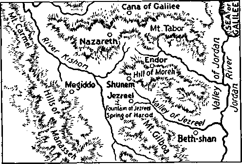

jK
7.5-~7 J7$-
*-ni,
IS r^BWTMnranr-^
>*A
sf
j£i l': W
's\
-Ezekiel 35 15
Vol LXII
Semimonthly
No 1
JANUARY 1, 1941
C0NTENTS
'*»W-£A
iH
'iVig
t/ '
'‘I
Drama of Vengeance (Part 3) Battle Begins
The Higher Powers Theocratic “No More Sea” .......
Field Experiences "Ehud’s Sword” Testimony Period “Watchtower” Studies Foreign-Language Subscriptions 1941 Yearbook of Jehovah’s witnesses “Satisfied” .........................
1941 Calendar . . ..
11
14
16
15
S'
i>
'3
Published Semimonthly By
WATCH TOWER BIBLE & TRACT SOCIETY
117 Adams Street « • Brooklyn, N.Y., U.S. A.
OFFICERS
J. F. Butherford, President______W. E. Van Amburgh, Secretary
“And all thy children shall be taught of Jehovah; and great shall be the peace of thy children.” - Latah 54;I3-
THE SCRIPTURES CLEARLY TEACH
THAT JEHOVAH is the only true God, is from everlasting to everlasting, the Maker of heaven and earth and the Giver of life to his creatures; that the Logos was the beginning of his creation, and his active agent in the creation of all things; that the Logos is now the Lord Jesus Christ in glory, clothed with all power in heaven and earth, and the Chief Executive Officer of Jehovah.
THAT GOD created the earth for man, created perfect man for the earth and placed him upon it; that man willfully disobeyed God’s law and was sentenced to death; that by reason of Adam's wrong act all men are born sinners and without the right to life.
THAT JESUS was made human, and the man Jesus suffered death in order to prodiwe the ransom or redemptive price for obedient ones of mankind; that God raised up Jesus divine and exalted him to heaven above every creature and above every name and clothed him with all power and authority.
THAT JEHOVAH’S ORGANIZATION Is a Theocracy called Zion, and that Christ Jesus is the Chief Officer thereof and is the rightful King of the world; that the anointed and faithful followers of Christ Jesus are children of Zion, members of Jehovah’s organization, and are his witnesses whose duty and privilege it is to testify to the supremacy of Jehovah, declare his purposes toward mankind as expressed in the Bible, and to bear the fruits of the kingdom before all who will hear.
THAT THE WORLD has ended, and the Lord Jesus Christ has been placed by Jehovah upon his throne of authority, has ousted Satan from heaven and is proceeding to the establishment of God’s kingdom on earth.
THAT THE RELIEF and blessings of the peoples of earth can come only by and through Jehovah’s kingdom under Christ, which has now begun; that the Lord’s next great act is the destruction of Satan’s organization and the establishment of righteousness in the earth, and that under the kingdom the people of good will that survive Armageddon shall carry out the divine mandate to “fill the earth” with a righteous race.
ITS MISSION
HIS journal la published for the purpose of enabling the people to know Jehovah God and his purposes as expressed In the Bible. It publishes Bible Instruction specifically designed to aid Jehovah's witnesses and all people of good wilt It arranges systematic Bible study for Its readers and the Society supplies other literature to aid in such studies. It publishes suitable material for radio broadcasting and for other means of public Instruction In the Scriptures.
It adheres strictly to the Bible as authority for its utterances. It is entirely free and separate from all religion, parties, sects or other worldly organizations. It is wholly and without reservation for the kingdom of Jehovah God under Christ his beloved King. It is not dogmatic, but invites careful and critical examination of its contents in the light of the Scriptures. It does not Indulge In controversy, and its columns are not open to personalities.
Yearly Subscription Price
United States, $1.00; Canada and Miscellaneous Foreign. $1.50; Great Britain, Australasia, and South Africa, 6s. American remittances should be made by Postal or Express Money Order or by Bank Draft. Canadian, British, South African and Australasian remittance** should be made direct to the respective branch offices. Remittances from countries other than those mentioned may be made to the Brooklyn office, but by International Postal Money Order only.
Foreign Offices
British ....................................... 34 Craven Terrace, London, W.2, England
Canadian ..................-.........40 Irwin Avenue, Toronto 6, Ontario, Canada
Australasian.................... 7 Beresford Road, Strathfield, N. S. W., Australia
South African _________________________Boston House, Cape Town, South Africa
Please address the Society in every case.
(Translations of this journal appear (it several lanpuapes.j
All sincere students of the Bible who by reason of Infirmity, poverty or adversity are unable to pay the subscription price may have The Watchtower free upon written application to the publishers, made once each year, stating the reason for so requesting it. We are glad to thus aid the needy, but the written application once each year is required by the postal regulations.
Notice to Subscribers; Acknowledgment of a new or a renewal subscription will be sent only when requested. Change of address, when requested, may be expected to appear on address label within one month A renewal blank (carrying notice of expiration) will be sent with the journal one month before the subscription expires.
Entered as second-class matter at the post office at Biooklpn, N. Y., under the Act of March 3, 1ST9.
“EHUD'S SWORD” TESTIMONY PERIOD
This midwinter period of special activity will run through the entire month of February. The title thereof calls attention to the zeal, energy and fearlessness with which Ehud used his dagger against King Eglon, and which qualities all publishers of The Theocracy will exercise likewise during this Period. February opens up this year’s three-month Watchtower campaign, and hence all publishers will specialize on securing subscriptions for The Watchtower and offering as a premium the book Religion and the new booklet Satisfied, all on a contribution of $1.00. Arrange now for this Testimony, and, if possible, attend the local company service meetings where this campaign is being discussed and organized. Write this office if you need references. To contribute toward making up the general report of the work and results thereof, please turn in your personal report of what you accomplish.
“WATCHTOWER” STUDIES
Week of February 2: “Drama of Vengeance” (Part 3), fl 1-26 inclusive, The Watchtower January 1, 1941.
Week of February 9: “Drama of Vengeance” (Part 3), fl 27-47 inclusive, The Watchtower January 1, 1941.
FOREIGN-LANGUAGE SUBSCRIPTIONS
When writing the Society regarding a Watchtower or Consolation subscription in a language other than English, the foreign language should be clearly indicated (as, Greek, Spanish, or Polish, etc.). This is especially necessary when sending in changes of address and subscription renewals, using other than the regular renewal slips. Renewal slips with no foreign language indicated are always beheved to be English, and in most cases this causes considerable unnecessary trouble and much delay in forwarding the magazines. Be sure to indicate the language plainly in all correspondence and on all renewal slips. It will greatly facilitate the work in the office if you use the renewal slips that are sent with your magazine. Your correspondence with the Society’s office at Brooklyn will be given quicker attention if you write in the English language whenever possible.
1941 YEARBOOK OF JEHOVAH'S WITNESSES
In the face of an almost impossible year the publication of the 1941 Yearbook of Jehovah’s witnesses represents an accomplishment made possible only by Jehovah’s power. Confirmation of this you will find when you read the comprehensive report, as written by the Society’s president, covering the world-wide activities of (Continued on page 15)
Vol. LXII January 1, 1941 No. 1
PART S
"And shall not God avenge his own elect, which cry day and night unto him, though he bear long with them?
1 tell you that he will avenge them speedily."—Luke 18:7,8.
TEHOVAH’S Chief Officer spoke the words of the I foregoing text. They are prophetic words, which J are now about to have fulfillment in completeness. Jesus spoke with full authority, and all his followers thus have full assurance that the foregoing prophecy is certain to be fulfilled to their good and their deliverance. During the past few years preparation for the great battle that will vindicate the name of Jehovah God and avenge his faithful servants has been in progress. That crucial hour must now be very near, and with full faith and confidence the people of God should take courage and now greatly rejoice in their hearts. They should look forward with certainty to their early deliverance. It is no time now to be discouraged, regardless of what persecution may come upon those who are Jehovah’s servants. The evidence that daily comes to pass shows fulfillment of Jehovah’s prophecies foretelling these things, and which fulfillment thrills the heart of everyone who is fully devoted to The Theocratic Government. The Lord’s “other sheep” begin to be represented in the prophetic drama at this point, corroborative proof of which is found in other scriptures, showing that the “great multitude” must be gathered before the battle of Armageddon begins. The “remnant” and some of their “companions” are now together, but it must be that more will appear shortly, as the prophecy indicates. The “remnant” and the “other sheep” now suffer together and shall be avenged together, as the Lord has promised. We proceed with the examination of the prophetic drama: “Now Heber the Kenite had separated himself from the Kenites, even from the children of Hobab the brother-in-law of Moses, and had pitched his tent as far as the oak in Zaanannim, which is by Kedesh.” —Judg. 4:11, A.R.V.
2 It is well that we here give some attention to the Kenites, as bearing upon the matter under consideration. Heber the Kenite was not an Israelite, but was a companion of the Israelites. His name means “Company ; associated community”, that is, “a body of companions.” Here is another evidence that the name which God records in his Word as applying to a certain man has a peculiar significance.
' A prophecy concerning the Kenites is set forth in the Scriptures and says: “And he looked on the Kenites, and took up his parable, and said, Strong is thy dwellingplace, and thou puttest thy nest in a rock. Nevertheless the Kenite shall be wasted, until Asshur shall carry thee away captive. And he took up his parable, and said, Alas, who shall live when God doeth this!”—Num. 24: 21-23.
* Accordingly the Kenites that associated with the Amalekites, the avowed enemies of God and his people, did not fare well; but those Kenites that hung to and associated with the Israelites, God’s chosen people, were accordingly favored. Some persons of goodwill endure for a time and then they fall away to the enemy of the Lord. But those who remain with the Lord’s faithful people fare much better.
° Heber was a descendant of Hobab, who was a son of the father-in-law of Moses, and hence Hobab was the brother-in-law of Moses and acted for his father, who was the father-in-law of Moses. Moses married Hobab’s sister. (Ex. 2:16-22) When Moses was leading the Israelites and starting on their long trek to Canaan he invited Hobab to go with him: “And Moses said unto Hobab, the son of Raguel the Midianite, Moses’ father in law, We are journeying unto the place of which the Lord said, I will give it you; come thou with us, and we will do thee good ; for the Lord hath spoken good concerning Israel.” (Num. 10:29) From that time on the Kenites had relationship with Jehovah’s prophets and his people, which afforded them a much more favorable opportunity to receive the blessings of the Lord.
6 The American Revised Version of verse eleven of the prophecy correctly renders the text according to other supporting facts, to wit: “Now Heber the Kenite had separated himself from the Kenites, even from the children of Hobab the brother-in-law of Moses, and had pitched his tent as far as the oak in Zaanannim, which is by Kedesh.”
T Heber did not leave the land of Israel. He merely moved from the southern boundaries of Judah, where the main body of the Hobab Kenites were located, and pitched his camp or tent in the northern part of the land of Israel. The Kenites were a people that dwelt in tents. “And the children of the Kenite, Moses’ father in law, went up out of the city of palm trees with the children of Judah into the wilderness of Judah, which lieth in the south of Arad; and they went and dwelt among the people.”—Judg. 1:16.
8 Because of their close association with the tribe of Judah these Kenites were even tacked on at the bottom of the list of genealogies of the tribe of Judah; as it is recorded: “And the families of the scribes which dwelt at Jabez; the Tirathites, the Shimeathites, and Suchathites. These are the Kenites that came of Hemath, the father of the house of Rechab.”—1 Chron. 2: 55.
8 This Rechab named was the father of Jonadab; and the Jonadab descendants of Rechab took refuge in Jerusalem and received God’s promise of life. (2 Ki. 10:15-23; Jer. 35: 2, 6,18,19) These Kenites that remained with the Israelites foreshadowed the “great multitude”.—Rev. 7: 9-17.
10 While Deborah was dwelling under the palm tree Heber the Kenite was dwelling in his tent near “the oak in Zaanannim, which is by Kedesh”. The word Zaanannim means “removals”, suggesting the loading up of one’s goods on his beast of burden and moving on to another place and there pitching his tent. No permanent dwelling place and no fine mansions in which to dwell, thus indicating that the men of good-will from the time of Abel till now, those who will inherit the earth, have been a people who found no lasting abiding-place under the Devil’s organization, but all have been looking for and waiting for the kingdom of God under Christ. Now the great Theocracy is near full establishment, and these waiters rejoice, and doubtless the faithful men of old will soon be back and join with those who will form the “great multitude”, and some of the remnant, in performing the duties that the Lord will graciously assign to them. Doubtless Jehovah directed the last movement of Heber the Kenite from the south to the north part of Palestine, because shortly thereafter his tent served as a trap for Sisera, the enemy of Israel leading in the fight against God’s chosen and covenant people. Since the Kenites were a roving people, Heber did not move into Kedesh, the city of refuge, but came close by it and hence was acquainted with and close by Barak. Heber was near the oak tree, which is a symbol of strength, deep-rooted. The strength of God’s people is in the Lord; and the deeper rooted in the Lord, the stronger they are. Then information of the situation, and of Barak’s gathering all his army, got to Captain Sisera and his forces: “And they shewed Sisera that Barak the son of Abinoam was gone up to mount Tabor.”— Judg. 4:12.
11 Even though there was no hostility, but apparent peace, between Heber and the house of Jabin, it does not appear, nor does it follow, that Heber informed Sisera about the movement of the Israelites under the command of Barak. Note that the record does not say “he”, but “they showed Sisera” that Barak was moving. Doubtless the “they” there means some of the spying Canaanites who served Jabin by nosing around about Barak’s affairs, spying out what was going on and then reporting to Sisera the moving of Barak and Deborah. The Devil’s agents are always seeing what they can do to entrap the servants of God.
12 Jehovah first covered up the assembling of Barak’s troops at Kedesh, to shield them from interference by the enemy, but now the time had arrived and God permitted the enemy to learn about Barak’s organization being moved to Mount Tabor. God permitted this, of course, as that was a part of preparation for the battle. Thereby Jehovah maneuvered the enemy to the place of destruction, men, iron chariots, and all. That was exactly what Jehovah said that he would do when he sent Barak a message by Deborah’s messenger, as stated in verse seven above. This proves that Barak and Deborah did not recognize King Jabin and Sisera his captain as the “higher powers”, but that they trusted entirely in the Almighty God, whom they served and whom they recognized as the “Higher Powers”. The present position of Jehovah’s witnesses and companions is in exact harmony with that at this day. At first the religionists did not recognize the purpose of Jehovah’s witnesses as representing The Theocracy, declaring that kingdom. The religionists first dubbed Jehovah’s witnesses as a “cult” or “religious sect” that is very small and not worthy of consideration or even notice, calling them the “smallest kind of sect”. But the time came for the religionists to get a little more information as to the purpose of Jehovah’s witnesses and to learn that they are wholly for The Theocracy, the kingdom of Almighty God, and that they refuse to compromise in any manner whatsoever. Although they are small in number the religionists are learning that the Lord uses them, and that frightens and angers the religionists. Therefore the clergy or religious leaders proceed in due time to stir up the political and the law-enforcing bodies and other agents and hoodlums and mobs to hate and persecute Jehovah’s witnesses, and to malign those witnesses as a “cult that hates the government and hates everything”. In keeping with their father, the Devil, they cannot tell the truth. In order to create even a greater prejudice against Jehovah’s witnesses the enemy religious leaders induce the great worldly publications to print many false statements concerning Jehovah’s witnesses, denouncing them as “people that thrive on hate”. The enemy would not tell the truth even if they could.
13 Instead of Jehovah’s witnesses’ hating everything, it is exactly the contrary. It is written concerning the Lord Jesus, the beloved Son of the Almighty God: “Thou lovest righteousness, and Latest wickedness; therefore God, thy God, hath anointed thee with the oil of gladness above thy fellows.”— Ps. 45:7.
14 Likewise the faithful followers of Christ Jesus now on earth love righteousness and hate wickedness and delight to be in the company of Christ Jesus, the Beloved One. If they loved the wicked things of this world they could not be the faithful servants of God and Christ. Mark well it is written: “God is love,” and Christ Jesus is “the express image” of God.—1 John 4:16; Heb. 1: 3.
13 Jehovah has made his faithful followers of Christ Jesus his own witnesses because they love Jehovah and love his King and love serving The Theocracy. Therefore the Lord gives commandment to his faithful servants in these words: “Love not the world, neither the things that are in the world. If any man love the world, the love of the Father is not in him.”—1 John 2:15.
16 The Devil has at all times reproached the name of Jehovah God, and those reproaches fell upon Christ Jesus and have fallen upon the faithful servants of God who now serve The Theocracy. (Ps. 69: 9; Rom. 15: 3) Jehovah’s witnesses therefore delight to be reproached for the name of God and Christ and to thus fill up some of the sufferings that were left behind of Christ for the sake of his body members. (Col. 1:24) For this reason the religionists and their allies hate Jehovah’s witnesses and continuously reproach them and lie about them. This is a further reason for Jehovah’s witnesses to rejoice that they are counted worthy to be in the class with Christ Jesus and his apostles that have long gone before and are now with the Lord. These facts further comfort and strengthen God’s people in this day of distress. “And Sisera gathered together all his chariots, even nine hundred chariots of iron, and all the people that were with him, from Harosheth of the Gentiles unto the river of Kishon.”—Judg. 4:13.
17 No doubt Jabin the king of the Canaanites felt himself entirely secure in his situation, but when he was informed that the Israelites were marching to Mount Tabor he sent his field marshal forth to gather his own army. Corresponding to the situation created back in those days of Palestine note now the development of events in the world since 1918. The World War ended, the League of Nations was formed and fully endorsed by organized religion, with the Roman Catholic Hierarchy in the lead of the religious organizations. Such religious organizations, and particularly their leaders, then believed themselves to be entirely secure. But when Jehovah’s faithful servants were gathered by the Greater Barak, organized, anointed and started on the march to Mount Zion, singing the praises of Jehovah and his government and exposing the duplicity of religious organizations, the Devil and Gog sent the Roman Catholic Hierarchy on the run to fortify and prepare for the conflict. “Catholic Action” was systematically organized and began to work throughout the land. Like their prototype Jabin and his representative, they learned of the movement of the Lord’s organization and they prepared for battle. The marginal reading of this part of the text is: “And Sisera gathered by cry, or, proclamation,” his forces. Likewise the Roman Catholic Hierarchy, in the lead of religious systems, sent out their call to all anti-Theocratic powers and forces of the earth, raising the cry that Communism was about to overrun the earth, and therefore the burning need for “more religion” to preserve “Christendom’s civilization”. Of course, they knew that Communism was not threatening, but some kind of slogan must be had in order to frighten the people. That cry of Communism was accompanied also by a cry of “Social Justice”, also the product of the Roman Catholic Hierarchy. Together religious organizations have continued to cry out, “We must have community of nations and more religion,” instead of God’s kingdom by Christ Jesus. At the same time their cry was accompanied by the political-religious cry of “a good-neighbor policy” of all religions and all political organizations. The Hierarchy immediately took the lead in this movement, claiming that the Vatican and the associates thereof constitute the strongest bulwark against atheistic Communism. The whole movement has been deceptive, claiming to operate in the name of Christianity, but in fact against Christianity because against The Theocratic Government by Christ Jesus.
18 Mark this also, proving that the movement of “Catholic Action” is of the Devil: While the Vatican and allies raise the hue and cry against Communism, at the same time the Vatican and allies fully supported and still support Fascism and Nazism, both of which are distinctly anti-God and anti-Christ and necessarily against The Theocratic Government. In America the cry has been and is against Communism, while in Europe the Hierarchy officially says to the Communists: ‘We are holding out our hand to have you join us in our universal Catholic Action.” In truth and in fact Nazism, Fascism and the Papacy are all one and the same thing, because all have one common purpose, and that is to rule the world contrary to the will of Almighty God. That unholy combine artfully deceive and fraudulently induce the common people to believe that Christianity and religion are one and the same thing; hence they deceive many unsuspecting or gullible ones with the cry: “We must have more religion, else civilization will perish.” The real purpose of the conspirators is to crush Jehovah’s witnesses and their companions because these witnesses advertise The Theocracy, which truth exposes the duplicity of religious organizations and discloses to the people that such organizations are demonized, hence of the Devil.
*’ Sisera called into action “all his chariots, even nine hundred chariots of iron”. He used steam-roller methods against the Israelites, the typical people of God, just as the Nazi iron tanks have rolled over the weaker nations of Europe, and which has been done by the full endorsement of the Papacy. The Fascists, under the leadership of Mussolini, destroyed Ethiopia; the Fascists destroyed Spain; and the Roman Catholic Hierarchy praised and blessed all of this bloody work. Now as Armageddon nears, the Hierarchy, led by the head thereof, comes into the open and endorses Fascism, Nazism and dictators, and encourages them to destroy the liberties of other people. No regard is given for Catholics or small Catholic countries; if these stand in the way of carrying out the ambitious desire of conspirators, the pope advises to go ahead and clean them up. This is done that the religious-political allies may rule the earth in the place and stead of Jehovah’s kingdom under Christ Jesus.
20 The religionists today trust in their war equipment to bring them victory, even as Sisera trusted in his chariots of iron to gain easily the victory for Jabin’s army. It was not so, however, with Barak and Deborah, who were even as prophecy has said: “Some trust in chariots, and some in horses; but we will remember the name of the Lord our God. They are brought down and fallen; but we are risen, and stand upright.”—Ps. 20: 7, 8.
21 Barak did not go down to Egypt for war equipment and other help. Likewise the servants of The Theocracy today do not go to the religious world for help, because such would be contrary to God’s will. “Woe to them that go down to Egypt for help; and stay on horses, and trust in chariots, because they are many; and in horsemen, because they are very strong; but they look not unto the Holy One of Israel, neither seek the Lord!”—Isa. 31:1.
22 The people of God today on the earth well know that they can receive no help from the religious, political combine, and they seek none. Barak and Deborah trusted wholly in the Lord, and even so now the people of God on earth say: “I will lift up mine eyes unto the hills [higher place, or the capital organization of Jehovah under Christ], from whence cometh my help. My help cometh from the Lord, which made heaven and earth. He will not suffer thy foot to be moved; he that keepeth thee will not slumber. Behold, he that keepeth Israel shall neither slumber nor sleep. The Lord is thy keeper; the Lord is thy shade upon thy right hand.”—Ps. 121:1-5.
28 Sisera called up “all the people that were with him” to join in the war against the typical people of Jehovah, the Israelites. Even so likewise today the Roman Catholic Hierarchy call to action all of the Catholic population that they can control, and also they call the Protestants and Jews, who call themselves “good neighbors”, and these together with all the fearful and intimidated people, to join in the war against The Theocracy ; consequently the politicians and commercial traffickers who want to hold on to their gain, and also the law-making and law-enforcing officers who want to maintain their positions for selfish reasons, to join the unholy combine. The newspapers and periodicals throw in with the same crowd. The military men, whom the Hierarchy have in tow to do their bidding and to enforce their commands to prevent the proclamation of the Lord’s message, also join the combine. All of these are against the message announcing the great Theocratic Government, which shall rule the world in righteousness and bless those who love righteousness. It is the Devil’s organization, pitted against God’s kingdom.
24 Sisera rounded up everybody that was possible, “from Harosheth of the Gentiles unto the river of Kishon,” to drag them into the war against the Israelites. That meant the anti-God people near Mount Carmel and up to the head waters by Jezreel and Esdraelon, and all about that community. Assembling all of these forces, Sisera now with his 900 chariots of iron expected to sweep down past Megiddo on towards Endor. Sisera had no faith that God would fight for the Israelites, because he did not believe God and was against Barak. He might have been more cautious had he believed that God smote the Egyptians and destroyed them in the waters of the Red sea when Pharaoh and his six hundred chariots, and all his chariots and equipment, and all of the army of Egypt, fell into the waters of the sea and were destroyed, at the time Moses led them. (Ex. 14: 7, 23, 28) Likewise today, if the religionists and their allies had any real faith in God and if they believed His Word they would pursue a different course from what they are now pursuing.
25 The movement of Sisera and his army was exactly according to the maneuvering of Jehovah, who was bringing them to the point for their destruction. It appears that that is what God is doing at the present time, when he now gives command through his prophet Joel, to wit: “Proclaim ye this among the Gentiles; Prepare war, wake up the mighty men, let all the men of war draw near; let them come up; beat your plowshares into swords, and your pruning-hooks into spears; let the weak say, I am strong. Assemble yourselves, and come, all ye heathen, and gather yourselves together round about; thither cause thy mighty ones to come down, 0 Lord. Let the heathen be wakened, and come up to the valley of Jehoshaphat; for there will I sit to pudge all the heathen round about. Put ye in the sickle; for the harvest is ripe; come, get you down; for the press is full, the fats overflow; for their wickedness is great. Multitudes, multitudes in the valley of decision ; for the day of the Lord is near in the valley of decision.”—Joel 3:9-14.
26 Now we see the prophetic drama of vengeance and the prophecy of Joel in actual course of fulfillment, and all this to the joy of the people who are devoted to The Theocracy. The result is certain and can be but one way, because it must be in harmony with the expressed will of Almighty God.
27 Sisera and his allies, with all their equipment, moved forward to join battle with Barak, who commanded the little army of ten thousand. During the twenty years of oppressive rule by Jabin the Israelites would have no means of supplying themselves with sufficient war equipment that would in any wise compare with the strength of the enemy. Sisera being well armed and equipped and the Israelites being exactly in an opposite condition, it would appear to Sisera that he had an easy going and that he would quickly crush the Israelites. And so now the little company of Jehovah’s witnesses are looked upon by the religionists as an insignificant company of people, “the very smallest sect or cult,” as the religionists call them, who can do nothing, and their early defeat looks easy to the religionists. Their chief desire to defeat and destroy Jehovah’s witnesses is to prevent anything from being said that would expose the crookedness of the religious systems. Sisera did not take into consideration that God might fight the battle for his people. The religionists today do not fear God nor believe that Jehovah God will avenge his own elect. The Lord had told Deborah that he would deliver the enemy into the hand of Barak, and both Deborah and Barak believed this. The Lord today has told his people that he will fight their battle, and the faithful ones believe implicitly what God has said, and therefore they wait with confidence upon him. Back in the time of the drama Deborah and Barak were ready to act at the proper and appointed time, which the Lord would indicate to them. The time had now come. “And Deborah said unto Barak, Up; for this is the day in which the Lord hath delivered Sisera into thine hand; is not the Lord gone out before thee? So Barak went down from mount Tabor, and ten thousand men after him.”—Judg. 4:14.
28 As to the fulfillment of this part of the prophetic drama, have this in mind while considering the same: That the Watch Tower Bible and Tract Society, which in fact means the body of Christian people wholly devoted to Jehovah God and his kingdom service now on earth, is acting orderly under the direction of the Lord Jesus Christ, and that such organization is the visible part of God’s organization. The commands or orders to that organization come from the Lord, and not from any man, although men are used to have part in transmitting those commands or instructions to others of the organization. The Lord directs the minutest details of and concerning his people because they trust him, and his promise is that he will guide those that fully trust him. He directs the selection of the yeartext as used by his people. Long ago he made these promises and he caused them to be written down in his Word for the special benefit of those who are now on the earth and who fully trust and obey him. Among these promises are the following: “In all thy ways acknowledge him [Jehovah], and he shall direct thy paths.” (Prov. 3:6) “The meek will he guide in judgment, and the meek will he teach his way. What man is he that feareth the Lord! him shall he teach in the way that he shall choose.”—Ps. 25: 9,12.
29 Only those who believe the Lord and who are wholly devoted to The Theocracy claim these promises and rely upon them. If anyone does not have such faith he is not of the Lord; because without such faith it is impossible now to please God. In line with the scriptures above quoted the yeartext for 1937 was this: “Arise ye, and let us rise up against her in battle.” (Obadiah 1) In keeping with that yeartext and under the direction of the Lord the following articles appeared in The Watchtower bearing upon the yeartext, to wit: “Adversaries,” in the issue of June 1, 1937; “Opposing God,” June 15 and July 1; “Racketeers,” July 15 and August 1. These were followed by the series of articles on Jeremiah’s prophecy under the title, “His Work7 and His ‘Act’.” At the convention of God’s people in September of that year the book Enemies was put into the hands of God’s servants for use, and the “special pioneer” work was organized and conducted. Companies of Jehovah’s witnesses became more active under the Theocratic organization; therefore the earthly part of the organization of the Lord arose and went into action, and, without doubt, were under the leadership of the Lord Jesus Christ, and his invisible army moved into greater activity at the same time against the enemy. The Lord now permits his people to see these things that they may have stronger faith and greater hope.
” Deborah, picturing God’s organization, said to Barak: “This is the day in which the Lord hath delivered Sisera into thine hand.” This is further evidence that the Lord guides his people; and as he guided them back in that time, so he guides them in the present time, when the prophetic drama is being fulfilled; and as further evidence of this, note the following use of The Watchtower by the Lord. The Watchtower June 15,1938, published the article “Organization”, and under the subheading thereof, “His Due Time,” attention was called to the fact that twenty years had now passed since the Lord Jesus came to the temple of Jehovah God (Mal. 3:1-3); which twenty years corresponded with the twenty years that King Solomon employed in building the temple of God at Jerusalem and also his own palace and porch of the throne of judgment, and the house of the forest of Lebanon. At the close of that period of twenty years Solomon expanded his building operations beyond the capital city; and now twenty years from and after 1918 correspond to the abovementioned, which latter period having come to a close it was then due time for Jehovah’s witnesses on the earth under the direct command of the Greater Solomon, Christ Jesus, to intensify and enlarge their activities by a wider witness work and to do so under the Theocratic organization, which Jehovah had provided. From 1938 on, then, the facts conclusively show that there was such an intensifying and enlargement of the witness work throughout the earth.
81 It is the Lord who in his own due time and good way caused the publication of these great truths, which truths are his, and not man’s. Immediately following the above revelation and publication thereof The Watchtower published the four-part serial article on “His War”, the same being an explanation of 2 Chronicles the 20th chapter concerning the allied enemy assault upon Israel, and the complete defeat of that enemy. As there explained, the armies of Moab, Ammon and Mount Seir conspired together to destroy the Israelites and marched on Jerusalem, and the Lord destroyed them; thus emphasizing the fact that when God takes a hand the battle is not man’s, but is the Lord’s. The revelation of the meaning and the publication of that prophecy were next followed by the publication in The Watchtower of the series of articles on “Lovers of Righteousness”, dealing with David’s victory over the giant Goliath, and also the defeat of the enemies of David at Mount Gilboa and the battles at Perazim and Gibeon. All those battles and defeats, without any question of doubt, pictured the battle and complete destruction at Armageddon that shall befall the totalitarian monstrosity and its religion or demon conspirators. All this revelation from the Lord was recorded by him and now made known to his people to give them comfort and hope, and this comfort and hope comes exactly in time when they are in the greatest need of it.
” Coincident with the publication of the revelation from the Lord, as stated above, mark this further evidence of his loving-kindness, to wit: A great convention was held at Sydney, Australia, and there the Roman Catholic Hierarchy and other religionists bitterly opposed the people of Jehovah, but in that the enemy met a complete defeat. At that convention the chief addresses were on the subjects, to wit, “Lovers of Righteousness” and “Warning”, the latter being for the public, 25,000 of whom had assembled notwithstanding the bitter opposition of the religionists. That great convention was followed shortly with another convention at Seattle, Washington, and there the Roman Catholic Hierarchy bitterly fought against God’s people; at which time the chief address was on the subject “Violence”, which was broadcast throughout the nations to the great discomfort and chagrin of the religionists and to the great joy of Jehovah’s faithful servants.
” Then following shortly, to wit, in September, 1938, a convention of God’s people was held at London, England, where the slogan was raised for the first time: “Religion Is a Snare and a Racket,” “Serve God and Christ the King.” On that occasion banners containing that slogan were widely displayed throughout England to the great dismay of the religionists, and which slogan maddened the religionists. At the Royal Albert Hall, London, during that convention was delivered the public address on “Face the Facts”, and which address was radiocast throughout the British Isles, Canada and the United States, and transmitted by private land wires to forty-nine other assemblies held in different parts of the earth. The visible audience of that convention was more than 150,000 people, and the invisible audience was no doubt far greater, because 118 radio stations in the United States alone were employed in broadcasting the message.
“ Quickly that convention was followed by an assembly of Jehovah’s witnesses and the public at Mecca Temple, New York, where, on October 2,1938, a public address was delivered on “Fascism or Freedom”, at which time the Hierarchy’s alliance with Fascism, Nazism and Communism was exposed and it was shown that the purpose of their conspiracy is to destroy the liberties of the people and to gain control and rule the world by dictators contrary to the will of God and hence against The Theocratic Government. The Hierarchy exerted its greatest power to prevent assemblies of that convention held in different parts of the country, but failed completely. Thus the enemy met defeat! Attention is called to these facts here that God’s faithful people may see and appreciate the Lord’s guidance of his own people and that his people are used by him in the fulfillment of his prophecies long ago recorded in his Word for their comfort and hope. True to his promise, Jehovah has led and continues to lead those who love and serve him.
BATTLE BEGINS
80 The work of preparation was completed. The contending armies were in position of battle array and it was therefore time for the battle to begin. As an aid to the careful study and visualizing of this prophecy the position and movement of the contending armies is illustrated by a rough map of the territory and location of the mountains and cities where the drama was enacted, and which is here inserted.
80 Sisera had his army drawn up along the river Kishon some distance to the north of the town of Megiddo. Barak, with his army, was up on the heights of Mount Tabor, where the Lord had commanded him to assemble his troops. Sisera had to pull his iron chariots with horses, and these could not ascend and fight on the rugged mountainside. Mark now how the Lord chose the scene of battle, which is further evidence of his fighting for his own people. Looking down from the heights of Mount Tabor at the mighty and fully equipped army of Sisera, Barak might hesitate to move into the valley and there engage the enemy in battle without first receiving some definite instruction from Jehovah. The prophecy shows what instruction he received. Deborah, uttering that prophecy, said to Barak: “Is not the Lord gone out before thee ?” That was the signal for Barak to move into action. That meant that the invisible forces of Jehovah’s organization were now in action against the enemy, which enemy thought himself, with his host and iron chariots, to be invincible. Sisera had not reckoned on the superhuman power being used against him; therefore it would appear to him that the battle, which was about to take place, would be easily won by him because of his far superior equipment. Even before the battle began Sisera thought he had it won. That part of the prophetic drama pictures the “strange act” of Almighty God, which was then beginning. Those forces that went ahead of Barak in the miniature fulfillment of the prophecy above stated were led by Jehovah’s executive officer; and likewise the forces of righteousness at Armageddon are led by the only begotten and beloved Son of God, him who is “the Bright and Morning Star”, and the great Executioner of God’s wrath against the enemy. Together with him is an army of other spirit stars, all moving in their appointed courses and fighting against the enemy. (Judg. 5: 20) At the beginning of that battle Jehovah called into action superhuman forces and his Field Marshal employed them, and with these a great and terrific barrage was put down before Barak and his forces, which shielded and protected Barak and his army from view and aided in the assault they were about to make upon the enemy. Such was the “act of God”, and this act of God was manifested when a tremendous storm of wind, lightning and rain came, which flooded the country. The river was raised entirely out of its banks, and the waters rushing down over the mountainsides and over the valley swept everything before them. Sisera and his unnumbered infantry and his 900 chariots could not well fight against that terrific storm. As this storm raged in advance of Barak he moved his army down the mountain and into action.
8T “So Barak went down from mount Tabor.” He went down to engage the enemy in battle. His army went with him, and they followed along behind the great storm, and thus he followed after the Lord to assault the demon forces of Sisera, then in the “valley of concision [or slaughter]”. The ten thousand soldiers under the command of Barak pictured all the remnant of Jehovah’s witnesses, together with their companions, the “other sheep” of the Lord, which shall compose the “great multitude”. As it is written: 'These are they that follow after the Lamb [the Greater Barak] whithersoever he goeth.’—Rev. 14:4.
38 In this part of the prophetic drama Barak, whose name means “lightning”, pictured Christ Jesus, Jehovah’s mighty Avenger, and the picture shows that he will employ lightning or other superhuman weapons against the enemy host when the battle of Armageddon is fought. Even now the Lord Jesus is using lightnings of truth, which he shoots out against the enemy, which confounds the enemy and blinds them as to what is their proper course. Without any doubt, the Lord is now maneuvering the enemy and confounding them, and this confusion of the enemy will greatly increase. At the same time now the Greater Barak uses those faithful men and women whom the Most High designates as Jehovah’s witnesses to herald these truths of light, which also confuse, confound and greatly incense those who are the enemies of The Theocracy.
” Returning now to the prophetic drama: Up to this point Barak’s men did no fighting and killing, because the Lord God had gone out before them, confounding the enemy and driving them before the great storm, upsetting their iron chariots and sweeping them away. Doubtless the host under Sisera began to flee to the hills, or wherever they could go to escape the storm. Barak and his army quickly followed them up, and this they did at God’s command. At this particular point, with his army of ten thousand Israelites, is pictured the present-day movements of the faithful witnesses of Jehovah, the spiritual Israelites, advancing steadfastly and with unbroken ranks, pressing the battle to the gate against demonism or religion. They go on regardless of the apparent overwhelming opposition against them. The enemies have fortified themselves behind a “refuge of lies”, religion or demonism being the enemy’s principal means of deception, and it is against that refuge of lies that Jehovah’s witnesses and their companions now press the battle by heralding the message of Jehovah’s kingdom against the fortifications of the enemy. This immediately precedes the victorious assault by the Greater Barak, which shall result in the complete destruction of the enemy forces at Armageddon. All the physical facts now indicate the battle of Armageddon is quite near, when the real fighting takes place and the enemy will be destroyed.
40 Jehovah has given his word that he will fight for his people at Armageddon and that he will deliver his faithful servants. His word of promise is a full and complete guarantee that he will do exactly as he has said: “So shall my word be that goeth forth out of my mouth; it shall not return unto me void; but it shall accomplish that which I please, and it shall prosper in the thing whereto I sent it.”—Isa. 55:11.
41 For the comfort and hope of his faithful servants now on the earth God long ago made those prophetic pictures showing how he will fight for his people against the enemy. Several hundred years after the battle fought under the visible leadership of Barak Jehovah fought for David against his enemies. David had assembled his army at the mulberry grove, there to fight against the forces of the Philistines, and God said to David: “And let it be, when thou hearest the sound of a going in the tops of the mulberry trees, that then thou shalt bestir thyself; for then shall the Lord go out before thee, to smite the host of the Philistines.”—2 Sam. 5: 24.
42 Previous to that Jehovah had fought the battle for the Israelites under the leadership of Joshua at Jericho (Josh. 6:1-24); also the battles of Ai (Josh. 8:1-25) and at Gibeon. (Josh. 10:9-14) All of such events were brought about by the Lord God, and the record thereof made in his Word, and the meaning thereof is now revealed to his people for their comfort and hope.—Rom. 15:4.
48 But how many people today on earth believe the truth as stated in the Word of God, and particularly in the Scriptures foregoing? Jehovah’s witnesses at this present time are being oppressed and persecuted by religionists as never before. This persecution, of course, is a real test to the faith of those who have made a covenant to follow in the footsteps of Jesus. Their faith must be tested, and, as the Lord has said, “according to your faith be it unto you.” In fact his people could not now be put to the severe test unless God permitted them to be persecuted by the religionists, the demonized human creatures under the command of the chief of demons. The wickedness of the religionists continues to grow in severity against Jehovah’s witnesses. Does such persecution discourage them? No, it does not discourage those who are really devoted to God and to his King. They see that these times of stress and the persecution of them are but a fulfillment of prophecy, the carrying out of God’s will concerning them, to the end that they might prove their integrity under adverse conditions.
44 Many persons of the world see the great amount of injustice now heaped upon Jehovah’s witnesses and express themselves freely in protest against such injustice, but they fail to show real faith in God. An instance of this is here cited. The editor of the Michigan Christian Advocate has recently published an article calling attention to the injustices done to Jehovah’s witnesses, and emphasizing the fact that their liberties have been denied and that, although they are small in number and although he does not agree with them, they should have full religious liberty. He fails utterly to see the real point. He does not see that The Theocracy, for which Jesus taught all his true followers to pray, is the only hope of humankind. He does not see that those who are really devoted to The Theocracy must suffer persecution. Only those who are really devoted to God and his kingdom can see and appreciate what these persecutions heaped upon them really mean.
45 No amount of persecution of Jehovah’s witnesses could now be inflicted upon them except by the permission of the Most High. They are his witnesses and his anointed people, and his hand is over them. The fact that he does permit them to suffer shows that one of the chief reasons is to test the faith and integrity of his people. Well did the apostle say: ‘Through much tribulation shall we enter the Kingdom.’ The Lord Jesus, looking down to the present time of persecution of his faithful followers, propounds this question, and then answers it: “And will not God avenge the wrongs of His own people . . . ? Yes, He will soon avenge their wrongs. Yet, when the Son of Man comes, will He find [such] faith on earth?”— Luke 18: 7, 8, W eymouth.
46 According to the facts there is but a small number of people on earth who have and exercise full faith and confidence in the Lord, and who now believe that God will fully avenge his own people in his own due time. To have such faith one must now see that The Theocratic Government of Jehovah God under Christ Jesus, the great Redeemer and Executive Officer of the Most High, is the only bulwark against religion and associated wickedness and that The Theocracy is the only hope of deliverance of the people to life. And then such must recognize that God is now permitting the Devil and his agents on earth, particularly the leaders in religion, to have full opportunity to show their enmity against The Theocracy and its supporters, and that the wicked persecution of Jehovah’s servants is to permit them to prove their own integrity. Seeing this, the faithful ones are not at all discouraged, but are rather encouraged. They see the evidence corroborating scriptures that Armageddon is very near, when God will avenge the wrongs of his people. The true and faithful ones have no doubt that the outrages recently perpetrated in many parts of the earth against Jehovah’s witnesses will have due attention from the Lord in the near future when he literally cuts the enemy to pieces at the battle of Armageddon. All persons who now have real faith in God and in Christ will stand firm against all manner of opposition and persecution and will permit nothing to drive them away from a faithful service of the Most High. They will confidently rely upon the Lord for deliverance and salvation and will wait upon him, well knowing that in his own due time and good way he will fully and completely avenge the wrongs of all those who love and serve him. They can see now and appreciate the fact that the Devil is bringing all the woes upon the peoples of earth, and that the Devil’s time is very short; that the Devil is attempting to destroy particularly the servants of God and his King, and that soon God through Christ Jesus will fight against the enemy as he did in times of old, and will completely cut to pieces the enemy, and deliver all those who remain faithful and true to The Theocracy.
4T The prophetic drama of Barak and Deborah now in course of fulfillment is another proof that Jehovah will shortly avenge his own. Mark well now the battle that was fought at the river of Kishon, and after studying that battle record let all who have real faith in God confidently believe and know that the record of that battle, the meaning of which is now made known, is for the aid and comfort and the increasing hope of God’s faithful people on the earth.
(To be continued)
POLITICAL powers of the earth today are, variously, democratic, autocratic, totalitarian, Nazi, Communistic, Fascistic, and Hierarchic, and all of them against The Theocracy.
Theocracy is not the invention of Jehovah’s witnesses. As a term the word was first used by the Jewish historian Josephus, born at Jerusalem A.D. 37. Writing in Greek on the “'antiquity of the Jews”, and in his second book Against Apion, section 17, Josephus says: “Some legislators have permitted their governments to be under monarchies, others put them under oligarchies, and others under a republican form, but our legislator [Moses] had no regard to any of these forms, but he ordained our government to be what, by a strained expression, may be termed a Theocracy [Theokratia], by ascribing the authority and the power to God.” The nation of Israel, when faithful, was but a typical theocracy.
The Creator of heaven and earth, Jehovah God, is the great Theocrat. His power is supreme. From him proceeds all rightful authority. There is no limitation to his power, and there is no qualification to the statement that Jehovah God is supreme. “I am the Almighty God,” he says. (Gen. 17:1; 35:11) He is “the Most High”, and none can be above him. (Ps. 91:1; Eph. 4:10) “There is no power but of God: the powers that be are ordained of God.” (Rom. 13:1) Otherwise stated, all power that is rightfully exercised is that which is delegated by Jehovah to the creature to be exercised. It follows, then, that there is no creature or creatures that could rightfully make and execute laws or rules of action that are contrary to God’s law. When the apostle says, in his letter to the Christians at Rome, “Let every soul be subject unto the higher powers,” the words “every soul” include first the church and later all men of good-will who come into harmony with God.
Many comments have been written on Romans, chapter thirteen, to the effect that the governments of this world, including “Christendom”, are the “powers that be” and that such governments derive their powers from Jehovah God. At once it is seen that the foundation is laid for the doctrine of the “divine right of kings”, for the reason that the religious argument is that whatever power a nation has and exercises, that power is ordained of God, and that therefore the child of God must be obedient to that power. For many centuries the rulers and the nations called “Christian” nations have insisted that God has delegated to them the power to rule, and have used this to cause the people to pay them great respect and homage. Let this argument be followed to its logical conclusion, and where do we find ourselves ?
The fundamental law of the United States declares that a man may exercise his religion in any manner he may choose. Contrary to this fundamental law, some of the states enact a law that the gospel of the kingdom of God or The Theocracy can not be preached in certain places or under certain conditions, and they arrest and punish those who attempt thus to preach it. In Nazi Germany, in Communist Russia, and in Fascist Italy the law is that one can not preach the good news of The Theocratic Government at all without a permit from the government. God’s commandment to his sons, which commandment is given through his King Christ Jesus, is that this gospel of the Kingdom shall be preached in all the nations as a witness. (Matt. 24:14) Shall the child of God be obedient to the law of the United States or of Germany or Russia or Italy, or to the law of God ? Is it possible that God has delegated to those various nations the right and authority to make and enforce laws that are inconsistent with God’s own expressed will and in derogation thereof?
Is it not therefore clear that there has been a decidedly improper application of the apostle Paul’s words when applied to the governments of this world? When he says, “The powers that be are ordained of God,” is it not more reasonable that he directs his words exclusively to the powers possessed and exercised in God’s organization, and not those that are exercised in Satan’s?
The organization of Jehovah is of far greater importance than any other organization. It is to his organization that Romans, chapter thirteen, is addressed. Everything in God’s organization must be orderly; because he is the God of order, and not of confusion. This rule applies to His church: “For God is not the author of confusion, but of peace, as in all churches of the saints.”—1 Cor. 14: 33.
Aside from Jehovah himself his organization consists of Jesus Christ, his holy angels, cherubim, also the resurrected members of the “body of Christ”, including the twelve apostles, and also those on earth who have been brought into the church and anointed of God’s spirit and who are diligently serving as the witnesses of Jehovah. With these last there is now associating itself a “great multitude” of “companions”, persons of good-will toward Jehovah and his Theocratic Government under Christ. At the Jordan river, at the time of his consecration to God, Jesus was anointed to the high office of “priest for ever after the order of Mel-chizedek”. He was then and there clothed with certain powers as the man Christ Jesus on earth. Speaking to his disciples Jesus said that “the Son of man hath power on earth to forgive sins”. (Mark 2:10) After Jesus had been raised from the dead he said: “All power is given unto me in heaven and in earth.” (Matt. 28: 18) That power he received from Jehovah.
The word “power” is translated from the Greek word exousia. At Romans, chapter thirteen, the apostle Paul’s argument shows that the power there mentioned has reference to the authority that is possessed and exercised in God’s organization. It is the institution which Jehovah himself employs to carry out his purposes. The above-quoted scriptures are in point, as well as those that follow: Colos-sians 1:16: “For by him were all things created, that are in heaven, and that are in earth, visible and invisible, whether they be thrones, or dominions, or principalities, or powers: all things were created by him, and for him.” John 17: 2: “Thou hast given him power over all flesh, that he should give eternal life to as many as thou hast given him.” John 5:22,27: “The Father judgeth no man, but hath committed all judgment unto the Son; and hath given him authority to execute judgment also, because he is the Son of man.” These scriptures prove that Christ Jesus is the “higher power” and that Jehovah is the highest or supreme power. The expression “the higher powers” may therefore be applied to both Jehovah and Jesus, because Christ Jesus always carries out the order of his Father.
“Jesus Christ ... is gone into heaven, and is on the right hand of God; angels and authorities and powers being made subject unto him.” (1 Pet. 3: 21, 22) Manifestly this does not include the worldly nations, powers and authorities of the earth, for the reason that at the time of Jesus’ ascension to heaven and appearing in the presence of God it was not Jehovah’s due time to make the enemy organization the footstool of the Lord Jesus, as declared at Psalm 110:1. The apostle Paul’s words must therefore mean that “every soul” in God’s organization must "be subject” to Christ Jesus, the Prince, Ruler, or Head over God’s organization. In support of this conclusion Jesus stated that the power of judgment had been committed unto him, together with the authority to execute that judgment Such judgment has particular reference to the organization of Jehovah; as it is written: “For we [the apostle Paul and fellow Christians] must all appear before the judgment scat of Christ; that every one may receive the things done in his body, according to that he hath done, whether it be good or bad.” (2 Cor. 5:10) “For the time is come that judgment must begin at the house of God; and if it first begin at us, what shall the end be of them that obey not the gospel of God?” (1 Pet. 4:17) These scriptures show that Jesus Christ is the higher power, and his power is always exercised in harmony with Jehovah, the Supreme One.
A man is subject to the laws of the nation of which he is a citizen. He is therefore the subject of that nation. A citizen of the United States is subject to the laws of the United States. If that citizen of the United States is in Italy he is still subject to the laws of the United States, the land of his citizenship. Since Romans, chapter thirteen, is addressed to the anointed sons of God, the inquiry is pertinent: Where is the citizenship of the son of God? The apostle Paul answers that question and plainly declares that the members of the church or “body of Christ” on earth have their citizenship in heaven. “For our citizenship is in heaven; whence also we wait for a Saviour, the Lord Jesus Christ.” (Phil. 3:20, Rev. Ver.) It appearing that Paul is, at Romans 13:1, addressing his words to the church, the “new creation”, and the citizenship of such being in heaven, then, by all known processes of proper reasoning, Paul’s words must mean that these members of the new creation are subjects of God and must be obedient to the laws of God
The apostle could not mean that the “higher powers” are the worldly powers on earth of Satan’s organization It is not possible that these are higher than God’s arrangement of his own people and have control over it. The apostle says: “The powers that be are ordained of God,” or, “have been arranged under God.” (Emphatic Diaglott translation) Can this be properly applied to the worldly powers on earth and not applied to the church? The words of the apostle, at 1 Corinthians 12:18, 28, are in answer to that question, to wit: “But now hath God set the members every one of them in the body, as it hath pleased him. And God hath set some in the church; first, apostles; secondarily, prophets; thirdly, teachers; after that, miracles; then gifts of healing, helps, governments, diversities of tongues.”
Those who have insisted that the apostle referred exclusively to the worldly powers on earth when he said, “The powers that be are ordained of God,” cite in support the words of Peter, to wit: “Submit yourselves to every ordinance of man [(Rotherham’stranslation) Submit yourselves unto every human creation] for the Lord’s sake; whether it be to the king, as supreme ; or unto governors, as unto them that are sent by him for the punishment of evil doers, and for the praise of them that do well.” A careful examination of this text (1 Pet. 2:13,14) shows that it does not apply to the powers exercised by the worldly governments of this earth, but to the church. The phrase “ordinance of man” in 1 Peter 2:13 means “human creation”. How, then, could it be said that any ordinance of the church is of human creation? When the man Christ Jesus appointed the apostles and sent them forth as leaders and governors in the church, were they not all of human creation, within the meaning of 1 Peter 2:13 ? It was the man Jesus that did it, and it was men that were sent forth; and this is none the less true even though it was done in obedience to God’s command.
When the apostles announced a rule or rules relating to the church, were not these of human creation? In support of this conclusion, note Hebrews 13: 7,17: “Remember them which have the rule over you [(Emphatic Diaglott) Remember your leaders] . . . Obey them that have the rule over you, and submit yourselves: for they watch for your souls as they that must give account; that they may do it with joy, and not with grief; for that is unprofitable for you.” Therefore Peter’s words, at 1 Peter 2:13,14, addressed to the church, seem clearly to mean this: Where the church on earth acts under the authority of the Scriptures and creates an arrangement for its government or course of action, each member of Jehovah’s organization should submit to such arrangement and not try to overthrow it. If that which is of “human creation”, such as regulations, rules or leaders, becomes useless or the servants become unfaithful, the Lord’s organization through his duly constituted ones may take action to judge or rule or put out the unfaithful ones. No individual, however, has authority to take such action. The chief point is that it is the Lord’s organization or arrangement and he has designated the manner in which it shall be governed and judged.
What, then, did Peter mean when he said (1 Pet. 2:13) : “Submit yourselves . . . whether it be to the king, as supreme”? Undoubtedly he referred to Jesus, because Jesus is the King or Lord to the church, and is supreme over the church because he always acts in exact harmony with Jehovah, the great Theocrat and Supreme One. But how could it be said that Jesus the King is of “human creation”, as those words appear in the text? The apostle did not say that Jesus is an “ordinance of man”. When Jesus was on earth he laid down certain rules which must be followed by the church; and these rules, being promulgated by the man Christ Jesus, were of human creation. But even that is not what is here meant by Peter’s argument. Paraphrased, his words are these: ‘For the Lord’s sake submit yourselves to every ordinance of man in the church, for that ordinance relates to the King, the Christ, the Head of the church. To be sure, you will submit to that, because he is the Head of the church; or whether it relates to the governors of the church, who are sent by the Lord Jesus Christ.’ According to 1 Corinthians 12:28, the apostles were appointed as governors in the church. They laid down rules relating to the church. Whether those rules were directly inspired and directed from Jehovah or the Lord Jesus, or were made by the apostles, the members of the church may not have known; but they were admonished to be submissive thereto for the Lord’s sake and to let the Lord determine whether or not the rules were right. Not always did the apostles speak by commandment. On one occasion Paul said (1 Cor. 7:6): “I speak this by permission, and not of commandment.”
The argument of Peter, at 1 Peter 2:13, 14, was for the unity and harmony in the church. In support of this, note his further words: “Be respectful to all; love the brotherhood; fear God; honor the King.” (Verse 17, Emphatic Diaglott) It is manifest here, when he commands the church to be respectful to all, to love their brethren and to fear God, and then speaks of the King, that he does not mean the kings of earth over which Satan is the god. To determine to whom he speaks, it is but necessary to notice the opening words of the epistle, which he addresses to the church, the “new creation”.
As further proof that Peter’s words have reference to the government in Jehovah’s Theocratic organization, and that when he speaks with reference to the King he has reference to Christ Jesus, the King of The Theocracy, 1 Peter 2:14 says: “Or to governors, as sent by him for the punishment of evil-doers, and the praise of well-doers.” (Diaglott) Can it be said that God has sent the governors of the various nations, including the totalitarian states, to punish the evil-doers in the church and to praise the welldoers therein? Whoever heard of the governor or ruler of any worldly nation, including “Christendom”, giving praise to those because of their full and absolute obedience and faithfulness unto the Lord God and to the Lord Jesus Christ? The Lord Jesus Christ did send the apostles as governors in the church; and the apostles as governors in the church did punish evil-doers. Consult the record at Acts 5:1-10 concerning Ananias and Sapphira; also 1 Corinthians 5:1-5. The apostles also gave praise to those who did well in the church. See Philippians 1: 3; 2 Corinthians 9:1,2; Colossians 4:9,12,14. There is therefore no support in the argument that 1 Peter 2:13-17 has any reference whatsoever to the laws or governments of the worldly powers on earth. Jehovah conferred all power upon Christ Jesus, and in turn Jesus Christ delegated to his apostles certain powers in the church. Note John 17: 2; 20: 22, 23; 2 Corinthians 10:8; 13:10; Ephesians 3 : 7-10.
There are no successors to the apostles. There has long been in the world an organization called “organized Christian religion”. Because men in that organization have assumed to be successors to the apostles and individually to direct the affairs of the religious organization and of the other parts of the world, there has been much confusion of mind of those who have studied the Word of God. The apostle’s words have been woefully misconstrued. It should always be kept in mind that Christ Jesus is the Head of the church and that the apostles held special positions therein and no men since the apostles’ day have filled their places. (2 Cor. 11:13-15) The apostles exercised certain governing powers in the church. The Lord Jesus, and the apostles, under his direction, laid down certain rules for the governing of the church; and the Lord’s arrangement is not a democratic form of organization, but is under the control and command of the Lord Jesus Christ, Jehovah’s King, and therefore is a Theocratic government. Hence every individual member of the church should be subject to that arrangement.—Eph. 2:18-21.
Seeing, then, that the visible part of Jehovah’s organization, the Society, is made up or composed of God’s anointed witnesses yet on earth, and that this body or company of Christians is diligently endeavoring to carry out the Lord’s commandments, and knowing that the Lord Jesus is the Head thereof, even every member of the church and their earthly “companions” should diligently seek to be m harmony with the policy, course of action and work of sucli Society. If any are of the opinion that the Society is not pursuing the proper course, then commit the matter to the great Theocrat, Jehovah, and wait upon him to do the judging and to determine what is the proper course to be taken. Every member of Jehovah’s Theocratic organization Zion is in the covenant to do the will of the Lord, and every one must be in harmony with the great Theocrat and his King. That being true, every one must be subject to “The Higher Powers”.
THE gateway to the Mediterranean is the straits of Gibraltar, and the seventh successive world power foretold in sacred prophecy, to wit, Britain, forcibly took possession of this and holds it to dominate the sea.— Revelation 17: 9,10.
The thirteenth chapter of The Revelation, or Apocalypse, pictures the apostle John, the aged servant of God, standing “upon the sand of the sea”. This fitly represents today God’s servant class on earth, his anointed witnesses, standing in a place of security and gaining a Scriptural view of Satan and his works. The sands mark the impassable bounds of the sea, and hence a place of safety for one to stand. As stated at Jeremiah 5:22: “Fear ye not me ? saith Jehovah: will ye not tremble at my presence, who have placed the sand for the bound of the sea, by a perpetual decree, that it cannot pass it? and though the waves thereof toss themselves, yet can they not prevail; though they roar, yet can they not pass over it.” (Am. Bev. Ver.) Thus is disclosed the fact that those who stand safely in the Lord would be the first ones to discern and to make known the hideous organization of man’s enemy, Satan the Devil, and to warn the people of good-will to flee therefrom.
To man’s original invisible overlord, to wit, to Lucifer, “the anointed cherub,” was committed divine power, because God commissioned him to do certain things with respect to man To Lucifer it was said: “Thou art the anointed cherub that covereth; and I have set thee so: thou wast upon the holy mountain of God; thou hast walked up and down in the midst of the stones of fire. Thou wast perfect in thy ways from the day that thou wast created, till iniquity was found in thee. By the multitude of thy merchandise they have filled the midst of thee with violence, and thou hast sinned.” (Ezek. 28:14-16) Lucifer devised a scheme to break away from God’s universal organization and have an opposing one of his own; as described at Isaiah 14:12-14 : “How art thou fallen from heaven, O Lucifer, son of the morning! how art thou cut down to the ground, which didst weaken the nations! For thou hast said in thine heart, I will ascend into heaven, I will exalt my throne above the stars of God: I will sit also upon the mount of the congregation, in the sides of the north: I will ascend above the heights of the clouds: I will be like the Most High [Jehovah].” Rebellious Lucifer got control of the first woman on earth. The first man, because of his own selfishness, followed Satan into wickedness. The offspring of that once perfect human pair were born imperfect and as sinners, and have been easy marks for the enemy. Lucifer’s name was changed to Satan the Devil. He induced some angels of heaven to follow him in wickedness and proceeded to form an organization that has ever opposed God, slandered and reproached his great name, and deceived many, and he has attempted to devour every one that has taken his place on the side of Jehovah God and righteousness, and thus his course has been indicated by his four names, to wit, Satan and Devil and Serpent and Dragon.
While in exile on the isle of Patmos in the JEgean sea, the apostle John at his vantage point saw a vision and says: “And I stood upon the sand of the sea, and saw a beast rise up out of the sea, having seven heads and ten horns, and upon his horns ten crowns, and upon his heads the name of blasphemy.” (Rev. 13:1) It was a “wild beast”. (Emphatic Diaglott and Rotherham translations) Indeed all the facts of history show that it is symbolically a “wild beast”.
It is of much importance to determine what in Bible symbolisms is pictured by the sea. The symbolic meaning of “sea”, and which is abundantly supported by the Scriptures, is: The peoples of earth that are alienated from God and therefore ungodly, and that mother, nourish, bear up and support the visible part of Satan’s organization. The commerce of the earth is done chiefly on the waters and the commercial element exercises great influence and power over the people. The politicians of the world organize and harness up the “sea”, or the people, and control them, except in time of storm or great trouble. The religious element, and particularly the clergy class, chiefly the Roman Catholic Hierarchy, complacently sit upon and arrogantly ride upon the “sea”, or people. All three of these governing elements, politics, commerce and religion, draw their sustenance from the “sea”, or people. When God’s kingdom is in full sway there will be “no more sea”; for the reason that the peoples of earth will then be taught righteousness and brought into full harmony with God, and Satan’s power will be gone.—Rev. 21:1.
In the creation of this earth by the Almighty God the waters appeared first and the dry land afterwards. Then the spirit of God moved upon the waters and there came forth living creatures. Satan the Devil became a mimic god and has attempted to copy the great Creator’s work. How ? The people were first alienated from God, then Satan exploited them. His power moved upon the ungodly peoples of earth, that is to say, upon the “sea”, and symbolically the “sea” was fecundated and brought forth the beastly creature that John saw in vision, the instrument of Satan which he has used for the purpose of ruling the peoples of earth. Then the “dry land” appeared, that is to say, the visible organization of Satan. (Hag. 2:6) In the waters of the literal sea there are monsters which play in the waters and devour the smaller creatures. Among the peoples of earth there are monster organizations, cruel and heartless, that devour the smaller and weaker ones. The wicked ones in the “sea” cause the trouble and oppression. The wicked ones catch the people like fish of the sea, says the prophet Habakkuk (1:13-15). “The wicked are like the troubled sea, when it cannot rest, whose waters cast up mire and dirt. There is no peace, saith my God, to the wicked.”— Isa. 57: 20, 21.
The Scriptures show that the “sea” represents selfish commercial activity, and this is true with the religionists foreshadowed by commercial Tyre and who exploit their fellow creatures; concerning which Isaiah 23:11 says: “He [Jehovah] stretched out his hand over the sea; he shook the kingdoms; the Lord hath given a commandment against the merchant city, to destroy the strong holds thereof.” (See also Ezekiel 27:9; 28:2; Zechariah 9:3,4.) Satan is the great power that has organized the commerce of the world which provides sustenance for his officers and representatives on the earth. (Ezek. 28: 16) Egypt was Satan’s first great world power and had a monopoly once on the food supply of the earth, and the traffic of Egypt was carried on upon the waters of the rivers and the sea. Wherefore Ezekiel 32: 2 says: “Son of man, take up a lamentation for Pharaoh king of Egypt, and say unto him, Thou art like a young lion of the nations, and thou art as a whale [ (margin) as a dragon (devil) ] in the seas; and thou earnest forth with thy rivers, and troubledst the waters with thy feet, and fouledst their rivers.” This prophecy symbolically describes how Satan has exploited the peoples of the world.
Concerning Tyras, that ancient city which pictured the political, commercial Roman Catholic Hierarchy in particular, it is further written: “When thy wares went forth out of the seas, thou filledst many people; thou didst enrich the kings of the earth with the multitude of thy riches and of thy merchandise. In the time when thou shalt be broken by the seas in the depths of the waters, thy merchandise, and all thy company in the midst of thee, shall fall.” (Ezek. 27:33, 34) “And Tyras did build herself a strong hold, and heaped up silver as the dust, and fine gold as the mire of the streets. Behold, the Lord will cast her out, and he
(Continued from page 2)
Jehovah’s witnesses, under continuous enemy fire, during the past service year. Besides this amazing report the Yearbook also offers the president’s comment on the 1941 yeartext and a text with a Watchtower comment thereon for each day of the new year. The edition of the Yearbook is always limited, thus enhancing the costs involved; hence a contribution of 50c per copy is stipulated therefor. Organized companies should combine the orders of all individuals therefor and send such through the company servant.
“SATISFIED”
In these days of increasing dissatisfaction with everything of the world, the title of this new booklet, “Satisfied,” strikes the reader with a strong appeal. The contents of this 32-page booklet show how and by whom the heart’s desire of all men of good-will will smite her power in the sea; and she shall be devoured with fire.” (Zech. 9:3,4) Thus the Lord foretold symbolically how the Devil would exploit the people and use a small class to enrich themselves and how Satan’s organization shall perish.
As the sea is wide and covers much of the earth, so also does wickedness under the wicked ruler Satan cover the earth and rule it. (Note Psalm 104:25 ; Lamentations 2:13) Jehovah made the leviathan to play in the sea, whereas Satan made his monstrous organization of commerce together with its ally, religion, to play with the people and exploit them. (Ps. 104:26) The sea is the abode of the dragon; that is to say, Satan and his organization use the people for his own purposes. Jehovah shall “slay the dragon that is in the sea”.—Isa. 27 :1.
In the Scriptures Jehovah’s organization is symbolized by a good and pure “woman”. Satan’s organization is pictured or symbolized by a bad or wicked “woman”. The chief part of Satan’s organization, being composed of the demons of which Satan is the prince, is invisible to man, but the power and influence thereof is exercised upon the peoples of earth and has long used them for Satan’s wicked purposes. The Lord does not leave us in doubt as to what the waters of the sea symbolize. After describing to John Satan’s “woman”, “the great whore that sitteth upon many waters,” the Lord said: “The waters which thou sawest. where the whore sitteth, are peoples, and multitudes, and nations, and tongues.” (Rev. 17:15) The hope of the peoples of earth is to be entirely rid of Satan’s organization and to return fully into the favor of God. This great truth Jehovah God first shows to his servants in Christ who are devoted to Him. Now the time has come for all persons of good-will toward Jehovah and his Theocratic Government by Christ to receive the knowledge of the truth which is so much needed by them. They must know that Satan’s organization is their great and destructive enemy and that Jehovah God and his organization are the true friends of the people.
Further, John says: “And I saw a new heaven and a new earth: for the first heaven and the first earth were passed away; and there was no more sea.” (Rev. 21 • 1 i “No more sea” means that under Jehovah’s Theocratic Government by Christ ungodly human creatures from which Satan developed his “beast” will no longer exist. Then God will reconcile to Himself the people that live. Those who refuse to be reconciled shall be destroyed, and there will be a clean heaven and earth, making a “new heaven and a new earth”.
shall early be satisfied. The front-cover picture visualizes the setting of the story as related by the author, Judge Rutherford. Satisfied is now being mailed to all contributing 5c per copy.
1941 CALENDAR
The 1941 Calendar is exceptionally beautiful and expressive. Under the yeartext, to wit, “Salvation unto our God . . . and unto the Lamb” (Rev. 7:10, A.R.V.), the artist portrays with Scriptural symbolisms and modern details Jehovah’s “strange work” of judgment now fast reaching its climax among all nations. The Calendar date pads mark the special testimony periods for 1941, and also give field service suggestions for the intervening months. A contribution of 25c per copy is asked therefor, or $1.00 for five copies mailed to one address. Companies do well to send in combination orders through the local company servant
REFUGEE FINDS REAL REFUGE
•'I called at a house in N.W. London and was met by an Austrian who had escaped from Nazi Germany. She took Salvation and a Watchtower. I arranged for a back-call. In a fortnight I was back with the succeeding issue of The Watchtower. She cordially invited me to ‘come in’. Said she: ‘I have enjoyed the book Salvation, and have determined to become a subscriber for The Watchtower.’ I invited her to come to a Salvation study I was conducting near by. Unfortunately she fell ill and could not attend. I was a little discouraged over this and felt further despondent when I called with the next copy of The Watchtower, to find she was out. I pushed the Watchtower through the letter-box with one of my private cards containing my ’phone number. Within half an hour of my reaching home, guess how surprised I was when, in answering the telephone, I listened to a refugee pouring out her joy to me at having found The Theocracy. I arranged to see her, and thereafter she came to the Salvation study. Later the study of Salvation was carried on in her house, as she had several who were attending. Suddenly she was arrested as an alien and interned in Holloway gaol. There in the prison she carried on a marvelous witness work among other internees, placing much literature. She used a copy of the Yearbook pro-hfically, pushing it under the cell doors for others to obtain a knowledge of the world-wide work. Eventually she was transferred to the Isle of Man, and there remains at present, still carrying on the witness work in a bold, determined way. She has joined the local company of witnesses on the Isle and many other refugees have gone with her and the company itself has received new life, for the ‘refugees’ have indeed come a long way to find the truth.”
SOME RECOVERING FROM MOB INSANITY
“(November) The only territory left to be done here in Portland, Maine, happened to be the least desirable of all, one reason being it is 100-percent Irish Catholic. Every time I have worked in it there has been mob action. The last Catholic Action was when Catholic Legionnaire ‘Ginger’ L----attacked a witness from the rear, during the book
let work at night, and split his head open. The witness defended himself and gave his assailant a beating. The witness was arrested and found guilty; his appeal is pending. ‘Ginger,’ I understand, has been the cock of the walk in his parish. Pioneer Frances and I got the part of the territory where the trouble occurred and where ‘Ginger’ hangs out. Later I saw Frances playing the phonograph on the doorstep of an apartment. To her left was a store window. Watching her through the window were ‘Ginger’ and a crowd of men. When they saw me they looked pretty black. I waited for Frances. When finished, she related an experience she had around the corner with a policeman who tried to make her stop a doorstep setup and intimidate her from further work on his street. As she was telling me, the policeman came by. Walking over to us, he started: ‘Next time an officer of the law tells you to get off a porch, you go!’ I said: ‘Just a minute—what is your name !’ He gave me his name, but started talking so sweetly you could almost see the honey dripping while I wrote his name in my little book. ‘Ginger’ walks by, crosses to the other comer and watches us work. Everyone in the section was watching from store windows and homes. From then on we went, each one every other house. At one I approached a fellow came running toward me from a store: ‘Get that Jehovah stuff outa here!’ ‘What have you got against Jehovah’s witnesses!’ ‘Oh, nothing, except you are making too much trouble, and I have my religion.’ He warned me to leave the neighborhood at once because ‘this is election day and some of the fellows are drinking and no telling what you might get'.’ I then said: ‘So you admit that you are the troublemakers. Well, get this, Jehovah’s witnesses are not letting anybody use them for doormats, and if anyone is looking for trouble, he’ll get it on the other hand. We come to you for a peaceful purpose.’
“Around the corner I entered a barber shop. Who is there but ‘Ginger’ himself and two other Catholics. The Italian barber told me I could get out. Turning, I addressed ‘Ginger’ and the others: ‘Would you gentlemen like to hear this lecture!’ To my surprise ‘Ginger’ says: ‘Go ahead, play it, I’ll listen.’ I answered: ‘I shan’t play it unless you really want to hear it.’ At that he insisted and asked the barber, who gave permission. Frances passes and enters a store next door where a crowd was gathered. When the record was almost finished, someone came excitedly calling ‘Ginger’ to go to the store next door where Frances was. He bowed to me and excused himself. Frances reports that the Catholic woman who owned the store did not want the lecture run, but that the crowd insisted, so her objections were overcome. One woman tried to interrupt the lecture, crying ‘Oh, Jehovah!’ The crowd hollered, ‘Oh, shut up!’ and ‘Ginger’ said, ‘Yes, shut up! how can I hear the lecture with all that noise ?’ Almost everyone in the store took literature except the women who tried to prevail upon the men not to read it, but without success. One Catholic man said he received a Kingdom News in the mail but had torn it up, but ‘I’m going to read this’.
“When Frances came out, Verle and I were waiting ‘Ginger5 comes out and runs to Verle and addresses her: ‘Are you Miss Garfein!’ and further, ‘I’m awful sorry for the trouble I was mixed up in with you people, and I’m awful sorry I hit Mr. Cox. I want to go down to see him at the jail, and I’m going to.’ We talked a little. I asked if he had ever read any of our literature. His answer was ‘No’. I asked if he would like to read Conspiracy Against Democracy. He answered: ‘No, no, you see I don’t have any money.’ ‘Would you read it if I gave it to you!’ ‘Yes, I sure would.’ Receiving the booklet, he says, very courteously, ‘Thank you.’ A woman hollered, ‘Ginger, what’s the matter with you! You’re a Catholic. Let that stuff alone. That old Jehovah stuff, leave it alone; you don’t want that.’ He answered, ‘Yes, I do, and I’m going to read it.’ We departed. Different publishers saw him at different times during the afternoon and each time he spoke courteously. One of those men in that store at the time was called on at his home by another pioneer that afternoon, and he invited her in and had his whole family to listen. This is the first sign we have seen of anything breaking into the Catholic population here. It is quite thrilling. We had more setups and placed more literature in that territory than in any of the others lately.”
io